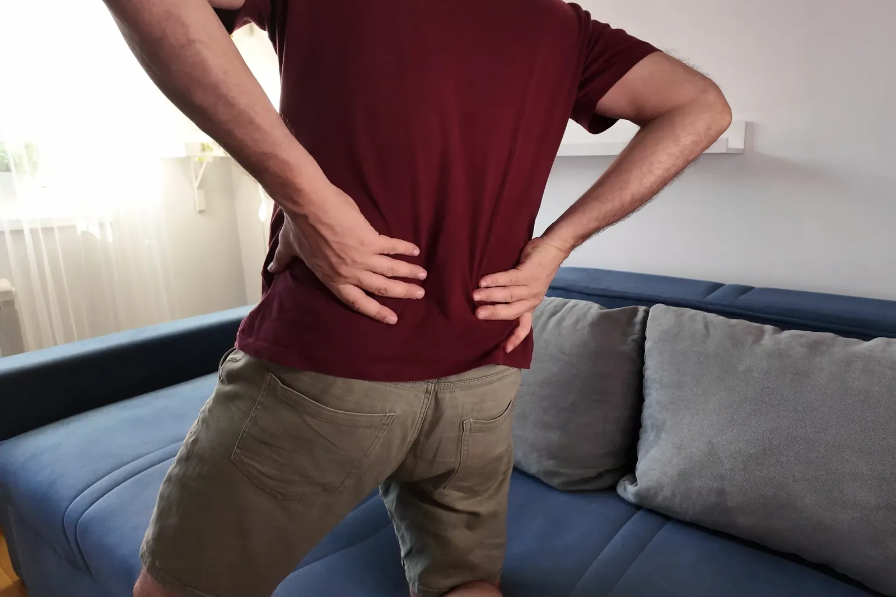

A disc is the cushion between two vertebrae, and a disc injury means that cushion has been strained, has bulged, or has pushed out far enough to irritate a nearby nerve. Chiropractic care works on the mechanics around it: restoring movement to the joints above and below, easing the guarding that builds up, and giving you the positions and movements that let an irritated disc calm down.

No phrase frightens people quite like a disc on a scan report. Most of that fear is not earned. Here is a plain-language look at what a disc injury actually is, what the words on the report do and do not mean, how chiropractic care can help, and when it is something that needs a surgeon rather than a chiropractor.
What causes a disc injury?
Discs sit between the vertebrae and act as spacers and shock absorbers. They are tough, and they are not fragile, but they do respond to load. A disc problem is usually the sum of years of loading plus one moment that tipped it: the lift, the twist, the long drive after a long week. Bulging, herniation, and degeneration are different points on the same spectrum, not different diseases.
The usual contributors we see in West Georgetown:
- Prolonged sitting, which loads the front of the disc hour after hour.
- Lifting and twisting under load, especially with a back that is already tired.
- Years of repetitive bending in a job or a sport.
- Normal age-related change, which happens to everyone and hurts almost nobody by itself.
- A back that has been guarding an old problem and quietly overloading one level.
Here is the part the report will not tell you: disc bulges and degeneration show up on the scans of enormous numbers of people who have no pain at all. Findings are not the same as the cause. What matters is whether the disc on your scan explains the pain in your body, and that is an exam question, not an imaging one.
How does chiropractic care help with a disc injury?
Chiropractic care works on the mechanics around the disc. Gentle, specific adjustments restore movement to joints that have stiffened and guarded, which changes how load is shared across the segment. Alongside the hands-on work, you get the positions and movements that let an irritated disc settle rather than staying provoked all day.
In practice, a course of care usually blends a few things:
- Adjustments matched in force to a segment that is already irritable, above and below the level involved.
- Soft-tissue work for the muscle that has been bracing around the injury.
- Positions and movements that help reduce your pain.
- Practical changes to sitting, lifting, and driving, so the disc stops being reloaded every day.
The first goal is to settle this episode, then give you the movement and habits that keep the disc out of the conversation.
What does care cost, and do you take insurance?
No referral is needed to book, and we will go over the costs with you up front so there are no surprises. Costs depend on your plan and what your back needs, and we will always walk you through it in plain numbers first.
- No referral needed to book a first visit.
- We go over the costs with you before anything begins, so you know what to expect.
- Clear, up-front pricing if you are paying out of pocket.
We cannot promise a specific outcome or what your insurance will cover; every plan and every disc is different. What we can promise is an honest look and a straight answer.
of the population in developed countries is affected by intervertebral disc disease each year, according to the U.S. National Library of Medicine. It is one of the most common reasons people end up with a scan report they do not understand, and one of the most workable things we see when the exam and the report actually agree.
Source: U.S. National Library of Medicine, MedlinePlus Genetics: Intervertebral disc disease. Figures were last updated in 2016.